Evaluating Geometry Nodes
Join the interactive part!
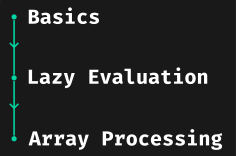
What's your background?
Basics
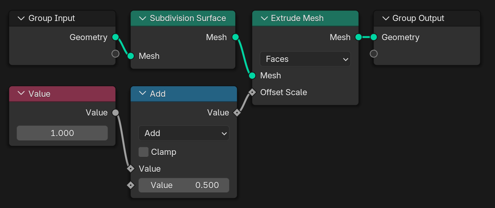
Toposort
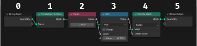
Are there multiple possible orderings?
Two-Pass Evaluation
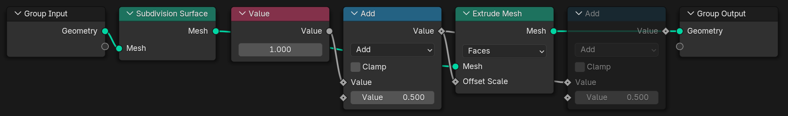
Request Based Evaluation
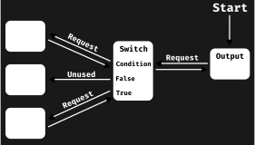
Lazy Function
Lazy Function Graph
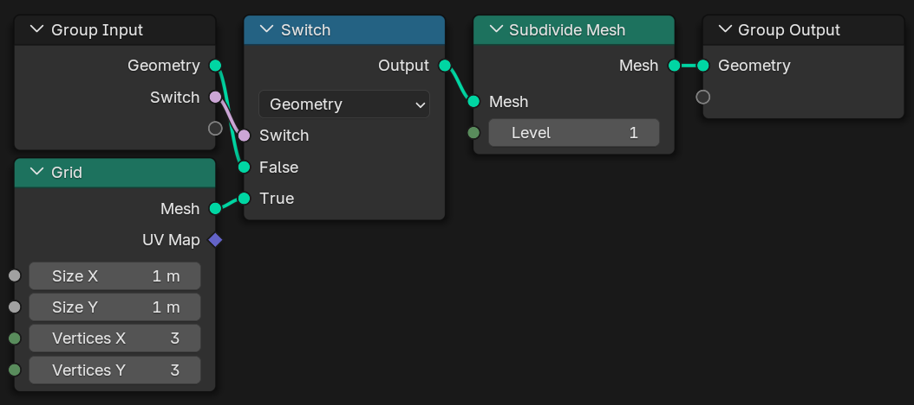
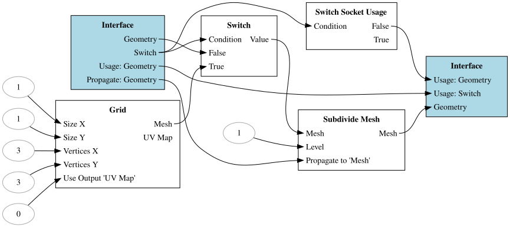
Scheduling – Message Priority
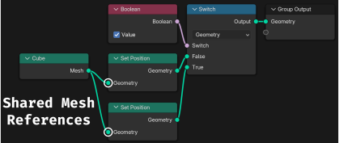
Scheduling – Breadth or Depth First?
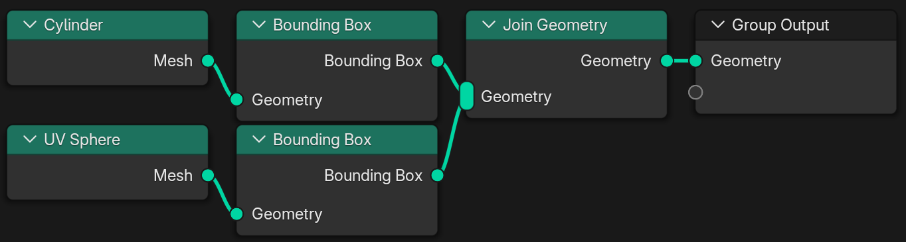
Lazy Function Composition
LazyFunction ⟶
Graph ⟶
LazyFunction
Node Groups
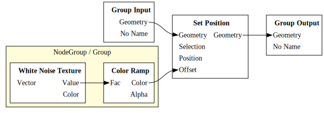
Zones
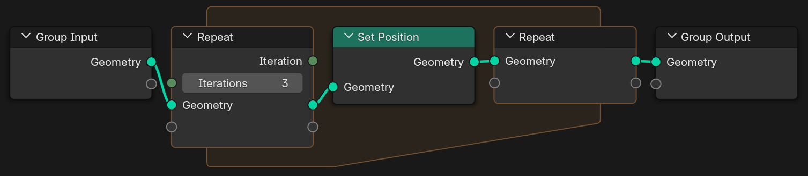
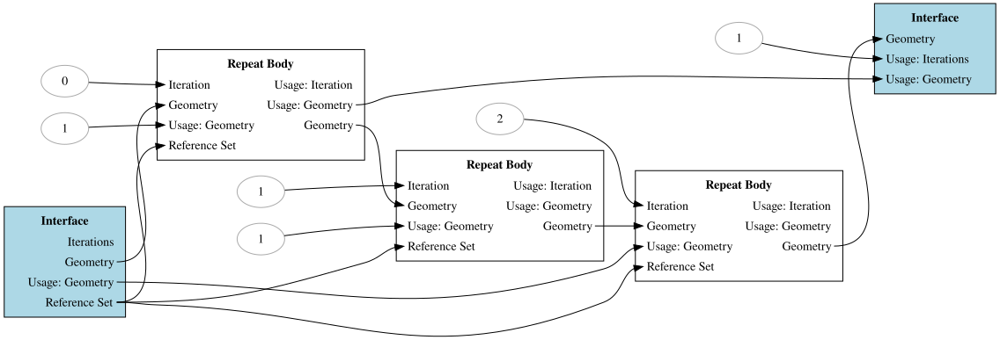
Scheduling – Multi Threading
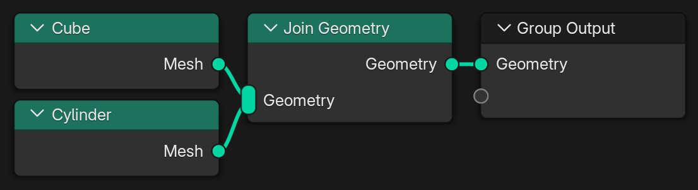
How many threads should be used here?
Task Stealing
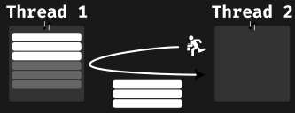
Splitting the Work
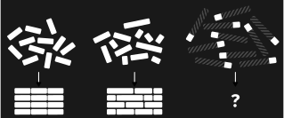
Non-Uniform and Unknown Task Sizes
Lazy Threading
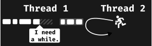
Array Processing
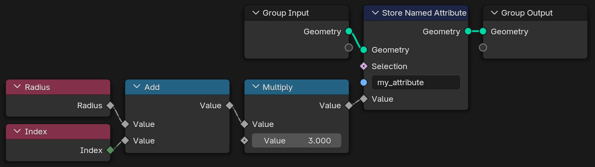
How many field evaluations happen here?
No GPU Processing

No Just-in-Time Compilation
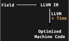
Latency: Time per Element
Throughput: Elements per Time
Which should we optimize for?
Multi Function
Multi Function Build Utils
Combinatorial Explosion
Binary Size /
Compilation Time
vs.
Performance
Controlling the Explosion
Add: 1296 ms ⟶
68 ms ⟶ 42 ms
Logarithm:
240 ms ⟶ 71 ms ⟶
63 ms
Multi Threading
Grain Size – Lower Bound
Grain Size – Upper Bound
Memory Reuse
2700 ms ⟶ 245 ms
SIMD
72 ms ⟶ 27 ms ⟶
23 ms
SIMD – Chunk Sizes
Key Takeaways
Optimize optimizability.
Don't be lazy with lazyness.
Compare against optimal performance.